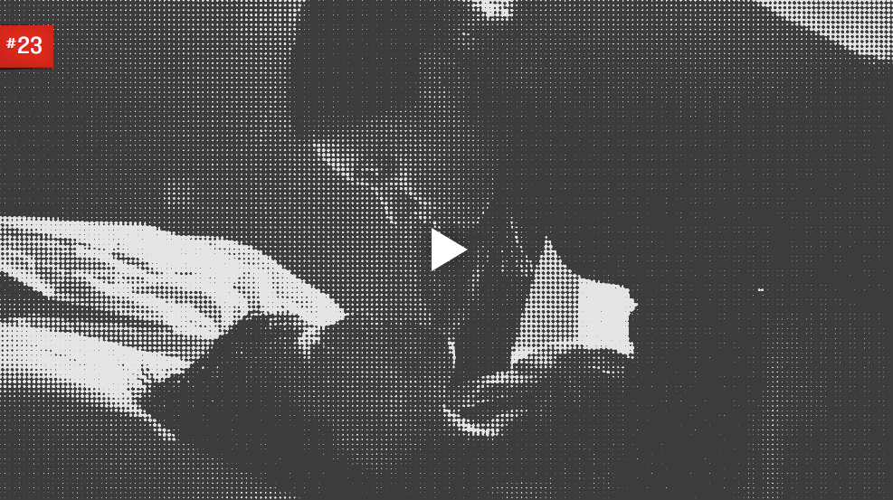

Currently viewing
everyting
sorted by
random
.
Inside (2007)
Directed by Alexandre Bustillo and Julien Maury

“Best Horror Scenes” is a collection of scenes I feel are some of the most affecting in horror. Some may be simple black cat scares, others may be more subdued or nuanced. Many come from films that aren't necessarily “horror” but have elements or threads of horror.